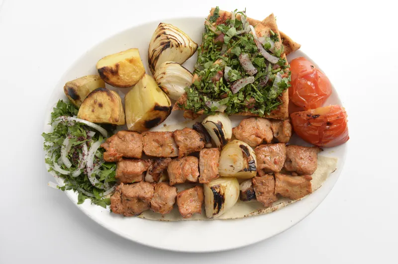
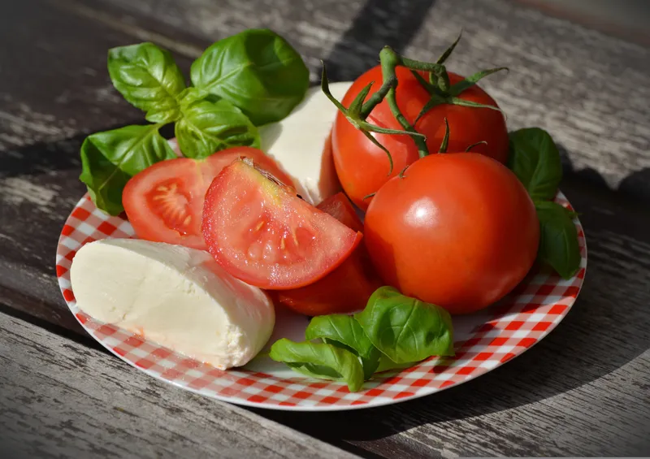

Cocina mediterránea auténtica
Sabores frescos y equilibrados que reflejan la tradición y la riqueza del Mediterráneo

Ingredientes frescos y de temporada
La base de la cocina mediterránea reside en la calidad de sus ingredientes. Verduras frescas, frutas de temporada, pescados y carnes seleccionadas forman parte de una propuesta equilibrada y natural.
Trabajamos con productos locales siempre que es posible, garantizando frescura y autenticidad en cada plato. Este enfoque nos permite respetar el sabor original de los alimentos y ofrecer una cocina honesta.
Cada receta está pensada para resaltar los ingredientes sin enmascararlos, logrando platos ligeros, sabrosos y llenos de color.
Tradición y sencillez
La cocina mediterránea destaca por su sencillez y su respeto por las recetas tradicionales. En Gastro seguimos esta filosofía, elaborando platos que mantienen la esencia de la gastronomía de siempre.
El uso del aceite de oliva, las hierbas aromáticas y las técnicas de cocción tradicionales aportan un sabor inconfundible a cada elaboración. Cada plato cuenta una historia ligada a la cultura y al territorio.
Nuestro objetivo es ofrecer una experiencia auténtica, donde la tradición se combina con una presentación cuidada y actual.

Equilibrio y bienestar
La dieta mediterránea es reconocida por sus beneficios para la salud, gracias a su equilibrio y variedad de nutrientes. En nuestra cocina, buscamos mantener este equilibrio en cada plato.
Apostamos por preparaciones ligeras que cuidan el producto y evitan procesos innecesarios, ofreciendo opciones saludables sin renunciar al sabor.
Disfrutar de la comida mediterránea es mucho más que alimentarse: es compartir, disfrutar del momento y conectar con una tradición culinaria rica y diversa.